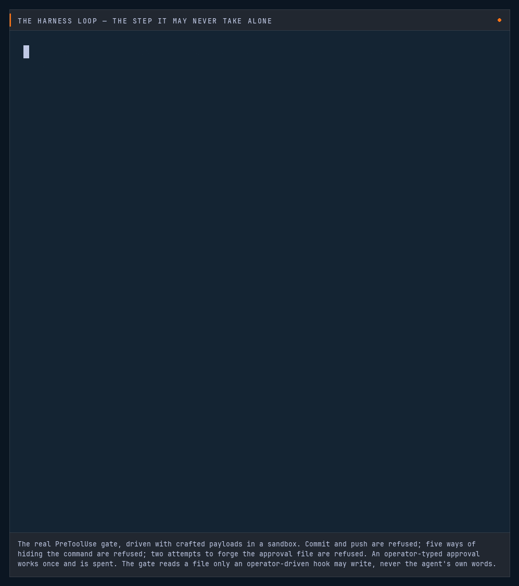

Erik Hill
I build the tests that catch AI when it's wrong — deterministic graders, not a model grading itself — so a score change means the model moved, not the test.
Evaluation harnesses, regression gates, and adversarial test batteries for LLM systems — plus the autonomous development harness I built them for: a multi-agent loop that plans, executes, critiques and validates its own changes to a real React / Capacitor product, with a human on every step that can't be undone. The work is public and runnable: thirteen repos — five run their real compiled code in your browser, one is a deployed FastAPI + Postgres service my CI posts eval runs to, and the rest turn that into a dashboard that shows what failed, a merge gate that blocks regressions, an MCP tool server, a live public board tracking 16 LLMs for drift, and a live crash test built on the shared deterministic grader underneath all of it — and a harness sweeper that used that same grader to contradict me about my own architecture. My first game is already live on Google Play — this is the second one. Self-taught, in under a year.
Ninety seconds through all of it
A narrated walk through the harness, the live board, and the repos — everything on this page, running. The same discipline runs under all of it — the checks are code, never a model grading itself — and you'll see it turned four ways below.
The grader caught its own bug
The same discipline, turned on a live model — a fixed predicate names the failure, every fail card shows its work.
Point your own model at an adversarial battery — eight tasks across seven kinds: injection, tool-abuse, hallucination-bait, refusal — with your own API key, and get back a severity-weighted vulnerability report. On a live run against a real model it read ~29% vulnerable. But the graders are deterministic and every failure shows its work — prompt, expected, actual — so the fail cards gave it away: that 29% was the grader's own bug, not the model's. Re-graded against that run's answers, the real number was 0% — caught before it could publish a false claim about a real model. (A historical BYOK run: by design the key and the transcript never touch the server, so that figure isn't re-runnable from the repo — but the three grader fixes and their regression tests are.) An auditable grader has bugs you can catch; a vibes arena just hands you a number.
Red-teaming LLMs is crowded, mature ground — garak, PyRIT, and promptfoo cover far more. What's checkable here: the grader is gradecore — the live board's own grading logic, lifted into a shared package rather than rewritten from memory. Run the board's frozen suite through it and the suite_hash comes out byte-for-byte identical, and a test in CI keeps it that way. No LLM-as-judge, so every grade reproduces. And your key never touches my server — the browser calls the provider directly, the grade request carries no key field at all; watch it in the Network tab.
It also answers the question a single run can't: run the battery N times and it separates the mean score from the worst case — a task counts as failed if it failed in any run, because an attacker only needs the leak to land once. A model that leaks two times in five reads clean on three of them. The flaky tasks get named.
Free tier — the first click takes ~30s to wake it. Deterministic grading, a severity-weighted score, and a fail card for every miss; BYOK for Anthropic, Gemini, xAI, Groq, OpenAI, or any OpenAI-compatible endpoint.
The same grader, pointed at the harness instead of the model. The crash test asks whether one model breaks under attack. The Harness Builder asks the question after it — and the first time I ran it, it contradicted me.
The crash test isn't a sixth project — it's the system below, pointed at your model. Every battery it runs is a grader the system already had, and there is one battery per lens:
suite_hash. Not a copy of the questions; the questions.
gradecore graders, severity-weighted.
faithfulness is now a one-line call to this grounding_score; a test asserts the two agree exactly.
eval_run.json and posts to eval-history, tagged source=crash_test — so a public, key-in-the-browser test can never scribble on the drift history it shares a database with.
So it's one engine turned four ways, not four engines: the same gradecore predicate set, the same wire format, the same store. In In the Wild and One System, those same pieces do the job they were built for.

More scaffolding scored worse, for 22× the cost
I believed the opposite. I built the thing that could check, pointed it at my own assumption, and it disagreed.
Everyone knows a planner improves an agent, and a panel of drafters with a judge improves it further. More thinking, more review, better answers. I had never measured it. So I built a tool that could, ran it across twenty coding tasks and three harness shapes for $0.99, and the result went the other way.
Then it refused to declare a winner. 95% versus 80% looks decisive. It isn't: seventeen of the twenty tasks were ties, so only three carried any information, and a paired sign test cannot clear p<0.05 on three discordant pairs even if one side sweeps all of them. So the tool said so, in those words — “this suite cannot decide between them — that is a limit of the suite, not a finding about the harnesses.” A leaderboard would have printed 95 and 80 and let me conclude the panel was worse. That would have been a stronger claim than my own data supports.
Which leaves three separate statements, and the difference between them is the whole point: there is no evidence the panel helps on this suite; it measurably costs 22× more and takes 8.4× longer; and whether it is genuinely worse needs more tasks than twenty. Most eval tooling collapses all three into a ranking.
The obvious objection: my own harness is scaffolded too. Five stages — plan, execute, critique, validate, ship. So does this result indict it? No, and the distinction is the reason the result is worth reading rather than a reason to hide it. What the sweep measured is redundancy at a single step: two drafters and a judge answering one short task, which is the same capability sampled three times and billed three times. My harness's stages are not three drafts of one answer — they are different functions separated across time, and the one that earns its keep is validation against a real device, which catches a regression before it ships. A twenty-task one-shot suite has no regressions to catch, so it could not have measured that either way.
Which is a narrower claim than I would like, and worth saying plainly: this result does not vindicate my harness. It just doesn't indict it — it is evidence against a pattern my harness does not use. Testing the pattern it does use needs a suite where a change can break something that already worked, and that is a different instrument from this one. Naming the experiment I have not run yet seems better than letting a favourable reading stand.
A harness config is data — roles, models, prompts, topology — so you can draw the shape and it writes the JSON, or paste the JSON and it draws the shape. Declare the axes you want to vary and it runs the matrix. Scoring is deterministic: fixed predicates execute the generated code and return a verdict, and no model grades anything. There is an assistant in the page; it may read scores and explain them, and it may not produce one — its config proposals have nowhere to put a score and are re-validated before they are offered, and every score-shaped number in its prose is checked against the run data, with anything it invented named and quoted back rather than rendered quietly. That check was a line of system prompt until I tested it; now it is a predicate with nine tests. 188 tests — 136 Python, 52 JavaScript.
Honest scope: harness and prompt comparison is not a new category — promptfoo, LangSmith and Braintrust all do more. The narrow thing here is the intersection: browser-BYOK, deterministic no-LLM-judge grading, and a comparison that reports when it cannot decide. Grading is deterministic; generation is not — no temperature, no seed, one run per config, so a 5-point move between two runs of the same shape sits inside sampling noise. That is a second reason it won't call a winner here, and it is stated in the field note rather than buried.
One caveat on the 22×: that ratio is at Sonnet 5 introductory pricing, which runs through 2026-08-31. After that the gap gets wider, not narrower.

A public board watching 16 models for drift
The same discipline, turned on time — a frozen suite, run week after week.
The stack you'll see below isn't only a demo of itself — it runs a live public tracker. A frozen, deterministically-graded suite hits 16 models across 5 labs — OpenAI, Anthropic, Google, xAI, Meta — on a daily cron, and every run is kept: accuracy, speed, verbosity, reliability, refusal rate. No LLM-as-judge — every task is scored by a fixed deterministic check (exact match, substring, regex, numeric compare, set membership), so a score change means the model moved, not the test. When one regresses against its previous run it opens a GitHub issue by itself — the post about it stays a human decision.
A frozen, deterministically-graded suite against 16 models across 5 labs. OpenAI's cheaper tiers match its own flagship — GPT-5 mini at 100% and GPT-5 nano at 100%, against GPT-5 at 100% — so within that lab, on this suite, paying more buys no accuracy. Grok 4.3 answers with 6x the characters of the tersest model, at 97%. GPT-4o mini leads on speed at 447 ms and 80% accuracy. Generated from the run of 24 Jul 2026 — this paragraph is rebuilt from the board's own numbers, never hand-written.

Don't read them — run them
The same discipline, turned inward — a pipeline that grades its own answer before it speaks.
Five of them here, all five live right now — no install, no signup, no API key. Four run in your browser — three are the real compiled Python that runs in CI, installed from the wheel CI built; the fourth is the dashboard's own static build. The fifth doesn't run in your tab at all — it's a deployed service on a real Postgres, and you can ask it a question. And they aren't five separate exercises — they're one system that calls itself. (The other two turn up in The Oracle.) And the grounding check the crash test above runs against your model is literally this stack's own — this is where it does its day job.
An agent that retrieves, a gateway governing its model calls, a harness grading its answers, a dashboard showing what failed, and a database that remembers every run. One button runs a question through all five and hands you the result — including the case that's perfectly faithful and completely wrong, which is the case that matters most. The last stage leaves your tab: it asks the live Postgres service what changed versus a run it really has stored, using the same compare.py the server runs, fetched from GitHub and executed in front of you.
Or try each stage on its own — the five below are numbered in the order they run. That button runs stages 1–4 in your tab; stage 5 is the deployed one, so it answers from a database instead.
And it isn't only a demo of itself. The same eval stack powers prompt-regress — a merge gate that runs your evals on every pull request, compares them to the main-branch baseline, and blocks the merge if the answers got worse. It fills a gap the popular eval runner leaves open (no history, no cross-run comparison), ships as a GitHub Action, and gates these very repos. The demo is the machine; this is what it's for.
And an agent can now call this stack directly. Three of the five are exposed by an MCP server, each doing the job it was built for: agent-graph's AST-sandboxed evaluator is the calc tool — arithmetic and nothing else; rag-eval-lab supplies search (its BM25) and grade_answer, which takes a draft answer plus its sources and names the sentences those sources don't support; eval-history answers compare_runs — did the latest eval run regress, per case. A fifth tool, model_drift, reads the live board. No LLM judge anywhere — a model grading hallucination is just another model output you can't reproduce. The other two aren't agent-shaped and shouldn't pretend to be: llm-gateway governs the model calls themselves (auth, rate limits, cost accounting) — an agent already has a model, so it has nothing to call there; eval-dashboard is for the human, turning a run into cards a person reads. Wire the server into Claude Desktop and the page's opening line stops being a claim: an agent that checks its own work before it answers.
A LangGraph ReAct agent: multi-step tool-calling with guardrails that bite — a safe evaluator and a step budget, both tested. The demo runs real LangGraph in your tab; try breaking the calculator with __import__('os').
One OpenAI-shaped FastAPI endpoint fronting many providers: auth, per-key rate limiting, caching, retries, per-model cost accounting. The real ASGI app answers in the demo tab — flood it for a 429.
A dependency-free RAG pipeline with a deterministic eval harness that catches a planted hallucination, re-checked on every push. The demo pip-installs the real wheel into your browser — write a false answer and watch it get caught, word by word. And it's measured: a from-scratch BM25 that matches the published SciFact baseline (nDCG@10 0.664 vs 0.665) — plus hybrid retrieval and a reranker it benchmarks honestly and shows don't beat BM25 here, with the mechanism. Knowing when a technique doesn't help is the point.
Turns an eval run into metric cards and a per-case table, flagging hallucinations in red. Strict TypeScript, runtime schema validation, static export, 29 tests.
Ask it what regressed and a real database answers — same commit, retrieval k=3 vs k=2: five cases better, one worse, verdict regressed. It won't let a better average bury the case that broke. Behind it, the only one of these five not running in your tab: a FastAPI + SQLAlchemy 2.0 service on Render against Postgres on Neon, with rag-eval-lab's CI posting its eval runs here automatically, tagged with the commit that produced them — non-blocking, so the bookkeeping can never redden the suite it books.

A loop that reviews itself before it lands
Agents that build unsupervised are easy. Agents you'd let build unsupervised are the problem — and the answer isn't a better model, it's knowing which steps a machine may never take alone. Here's the loop, how far it runs on its own, and exactly what stops it.
Work moves through five stages, and each leg arms the next through a hook rather than a hand-run command — judgment runs on a different, colder model than execution, so the critic isn't grading its own homework.
Automate the launches. Never the approval.
Trust is earned in named steps. Higher rungs remove clicks, never gates — a human still approves anything irreversible or outward-facing (deploys, commits, anything a user would see).
Rule: reliability earns launch-automation — it never earns gate-removal.
Here's the loop catching itself — one real arc.
The builder reported a number and called it the minimum achievable. The cold critic refused the claim, re-derived the truth from source, proved the real floor was 38% lower, and blocked the work. Then it ran the check the arc had just installed and watched the arc's own output trip it. Five stages, click through what actually happened.
▶ Walk through a real arcThis is the loop behind everything else on this page — and even its critic doesn't get the last word: it re-derives the number from source, then hands the verdict to a deterministic check the arc just installed — the same no-LLM-judge discipline the board and the oracle run on.

Correctness it can prove — not vibe-check
The same discipline, turned on itself — the logic written twice, and the disagreement names the liar.
Cascading match-3 rules have no obvious right answer to assert against — the expected output is as hard to work out as the code. So write the logic twice, by different algorithms, and make the two argue. Where they disagree, one of them is wrong, and no one had to know which answer was correct to find out.
Proof the test can fail: a check that has never caught anything isn't evidence. So I planted a deliberately-wrong implementation — special gems on runs of 3 instead of 4 — and both nets caught it: the differential check and an independent invariant checker, over 3,000 more boards. Neither missed a board the other found.
This is the technique, running end-to-end and clickable. Where it's headed is the real thing: when a system's core logic exists in two independent implementations — a reference build and a performance-critical port — each becomes the other's oracle. Wiring two such implementations into an automated gate is the next step, not something I'm claiming runs today. What does run today is a property-based invariant suite on the authoritative implementation, plus on-device validation driven by adb, so "it passed" means it passed on real hardware.
Don't take my word for it — run the oracle yourself.
Edit a board and watch both nets judge it live. Tick one box to swap in a deliberately-wrong implementation and watch them catch it. Then fuzz 5,000 random boards — the claim above, executed in your browser, on this repo's real Python.
The seed is fixed, so the two numbers below aren't a sample of what usually happens — they're a prediction, and the button either confirms it or makes a liar of me.
Or clone it and run pytest — self-contained, no setup beyond requirements.txt. Repo: github.com/egnaro9/evals-differential-oracle
The same trick, on my own code
A demo can be arranged to work. So here's the technique against something that had no idea it was being tested: a match-3 rules engine I built from scratch, compiled to JavaScript with TeaVM and dropped in a browser.
The port found a bug the JVM could not. Gem ids came from System.nanoTime(). On the JVM: 128,000 gems, zero collisions, forever. Browsers clamp the clock to ~100µs — a Spectre mitigation — so the same code produced 301 duplicate ids per 128,000, and those ids are renderer identity keys. The JVM tests passed either way. Only a second environment could see it.
A match-3 rules engine I built from scratch. Zero dependencies outside the JDK, pinned by 16 jqwik property invariants over thousands of generated boards, and playable here because TeaVM compiles it to JavaScript. It isn't part of the AI stack — it's a clean, self-contained target for property-based and differential testing.
The same trick, on someone else's
Then the obvious question: if porting my code to a second environment finds bugs, what about the thing doing the porting? TeaVM is a Java-to-JavaScript compiler I didn't write — 12 years old, and the tool that caught the bug above.
Its Calendar disagreed with the JVM's by six days, and had for twelve years.
Same test, two environments, one wrong. The cause was one character: days - 2 where every neighbouring branch — including the line directly above it — uses days - 3. Apache Harmony, which TeaVM's calendar was ported from, has days - 3. Git blame puts it at a commit from June 2014 — one about SimpleDateFormat tests, which is not where you look for it.
Four assertions that reach that line had been commented out since 2015 — one by the developer who later hit the bug and filed the issue, and three by the maintainer who eventually merged the fix. Nothing live reached the line, so the suite couldn't catch it. I re-enabled the four, changed the character, and they pass. No new tests.
▶ Read the pull requestMerged — konsoletyper/teavm#1213, against issue #371 (filed 2018, zero comments in the eight years since) — merged by the project lead on 17 July 2026. Nine lines changed, one of them the character that mattered. The finding never depended on it landing; it's just better that it did.
He also has a good eye for the quiet problem. The ones that don't throw an error, don't page anyone, and just quietly corrupt what you think you know about your system. Catching those takes patience and a certain suspicion of your own dashboards.
He wrote that about my work generally. The bug above is what it looks like in the concrete: no exception, no failing build, no alert — just the wrong date, for eight years, in a compiler thousands of projects depend on. A recommendation is a claim; #1213 is the receipt.
That's the whole argument, three times: write it twice, run it in two places, and let the disagreement tell you which one lied. It works on a demo, on my own shipped code, and on a stranger's compiler that had been quietly wrong since before I could program — and it's the same move that opens this page, where a deterministic grader catches its own lie about a real model.

What I actually work in
Front end to Postgres, plus the agentic layer on top. The projects above are the receipts.
Agentic
- Multi-agent orchestration
- LangGraph · tool-calling · RAG
- Model Context Protocol (MCP)
- Prompt & context engineering
- Evals · regression gating · oracle design
- Safety: OWASP LLM Top 10 · human-in-the-loop
Backend & data
- Python · FastAPI · Pydantic 2
- SQLAlchemy 2.0 · psycopg 3
- PostgreSQL · Alembic migrations
- REST API design · OpenAPI
- Resilient API clients · retries · backoff
- pytest
Frontend & JVM
- TypeScript (strict) · React
- Next.js 15 · Vitest
- Java · Gradle · JUnit · jqwik
- WebAssembly (Pyodide · TeaVM)
- Interactive SVG dashboards · data viz (no framework)
- Capacitor · React → Android (Google Play)
Ship & verify
- GitHub Actions — matrix CI, Postgres 16 + 18 service containers
- Docker · compose — images built and run in CI
- Render · Neon · GitHub Pages
- Differential oracles · property-based invariants
- Validation pipelines · device-test automation (Android · adb)
- Governance: a gate on every irreversible step
Not the usual route
I came to this from professional kitchens, not a CS program — six years of running high-volume lines, then under a year of building agentic systems from first principles — my first Android game went up in November 2025 and shipped to Google Play in April. Judge me on the work — the same bet every system up the page makes: prove it, don't ask you to believe it — and I'll take that trade every time.